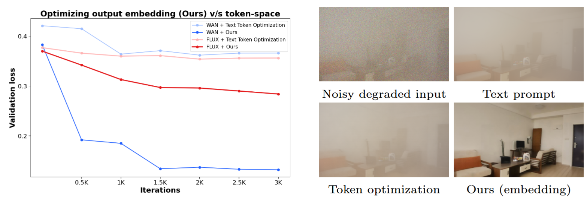
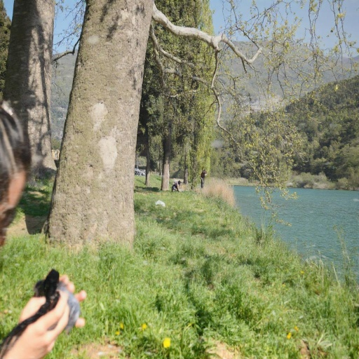
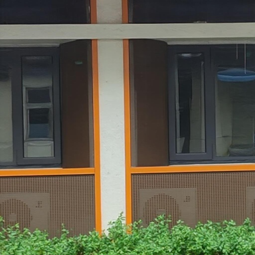
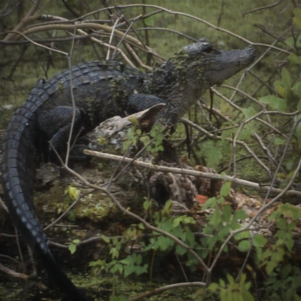
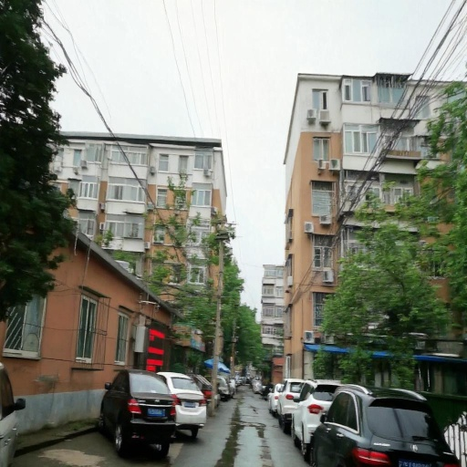
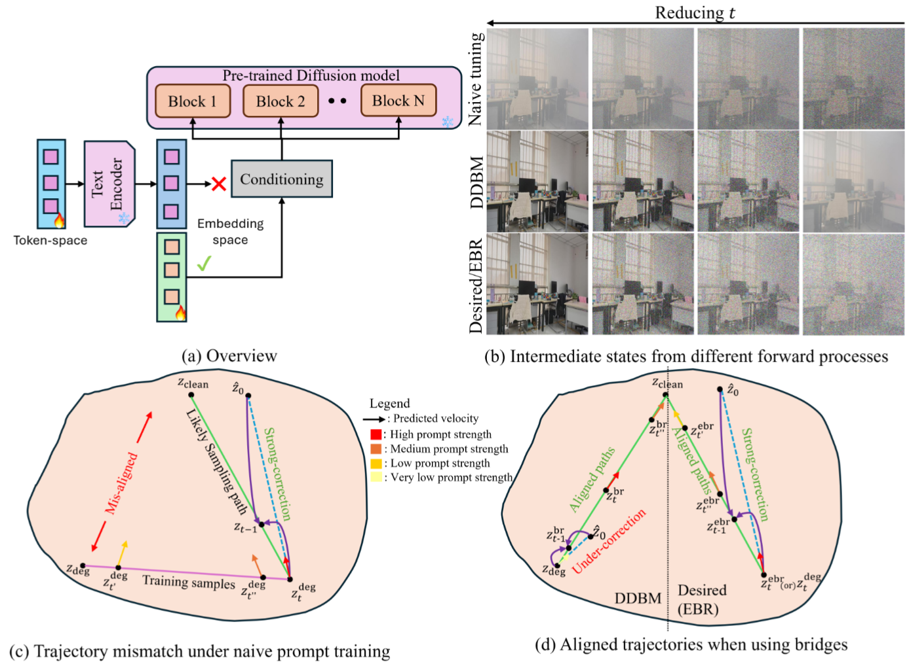
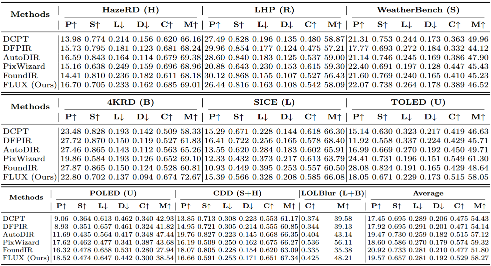
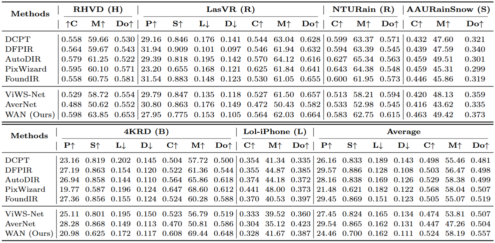
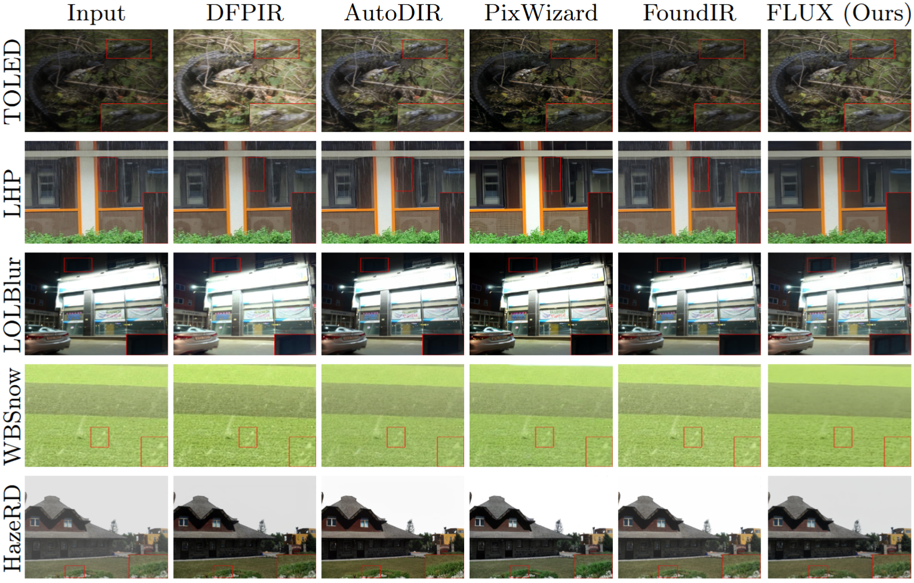
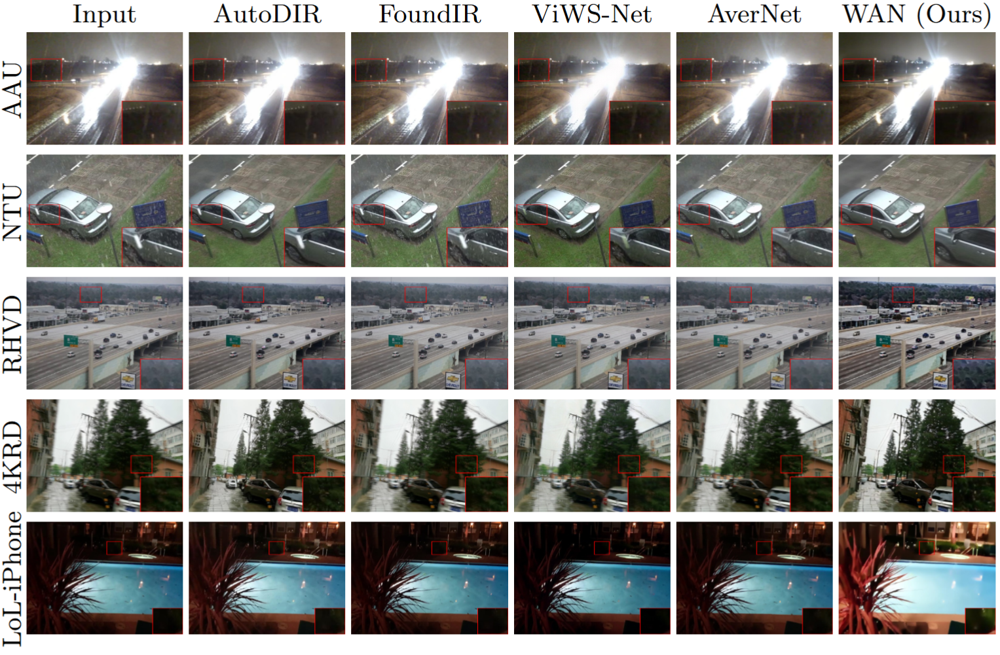

Even with optimized token prompts (textual inversion/prompt tuning), the model tends to denoise without removing degradations, whereas embedding-space optimization enables restoration from the same noisy degraded input.




Pre-trained diffusion models have enabled significant advancements in All-in-One Restoration (AiOR), offering improved perceptual quality and generalization. However, diffusion-based restoration methods primarily rely on fine-tuning or Control-Net style modules to leverage the pre-trained diffusion model's priors for AiOR. In this work, we show that these pre-trained diffusion models inherently possess restoration behavior, which can be unlocked by directly learning prompt embeddings at the output of the text encoder. Interestingly, this behavior is largely inaccessible through text prompts and text-token embedding optimization. Furthermore, we observe that naive prompt learning is unstable because the forward noising process using degraded images is misaligned with the reverse sampling trajectory. To resolve this, we train prompts within a diffusion bridge formulation that aligns training and inference dynamics, enforcing a coherent denoising path from noisy degraded states to clean images. Building on these insights, we introduce our lightweight learned prompts on the pre-trained WAN video model and FLUX image models, converting them into high-performing restoration models. Extensive experiments demonstrate that our approach achieves competitive performance and generalization across diverse degradations, while avoiding fine-tuning and restoration-specific control modules.

Even with optimized token prompts (textual inversion/prompt tuning), the model tends to denoise without removing degradations, whereas embedding-space optimization enables restoration from the same noisy degraded input.

(a) We freeze the diffusion backbone and optimize only the conditioning: token-space prompts fail, while embedding-space optimization elicits restoration. (b) Naive tuning yields states anchored at the degraded latent, while DDBM is pinned at both endpoints; our desired bridge starts from noisy degraded inputs and denoises toward the clean latent. (c) Naive training and inference see different state families, causing trajectory misalignment. (d) Bridge-based training aligns train/test states; DDBM may under-correct early, while the desired bridge enables stronger correction along an aligned path.
Quantitative comparisons of our prompt learning approach on the FLUX model with state-of-the-art AiOR approaches for images from OOD, mixed and unseen degradations.

Quantitative comparisons of our prompt learning approach on the WAN model with state-of-the-art image and video restoration approaches for the task of all-in-one video restoration on OOD datasets.


Qualitative comparisons of the pre-trained FLUX model using our learned prompts with state-of-the-art AiOR approaches. Our approach enables the pre-trained FLUX to achieve remarkable restoration performance.

Qualitative comparisons of the pre-trained WAN model using our learned prompts with state-of-the-art AiOR approaches. Our prompts elicit the strong restoration potential of the pre-trained WAN model.
@misc{}